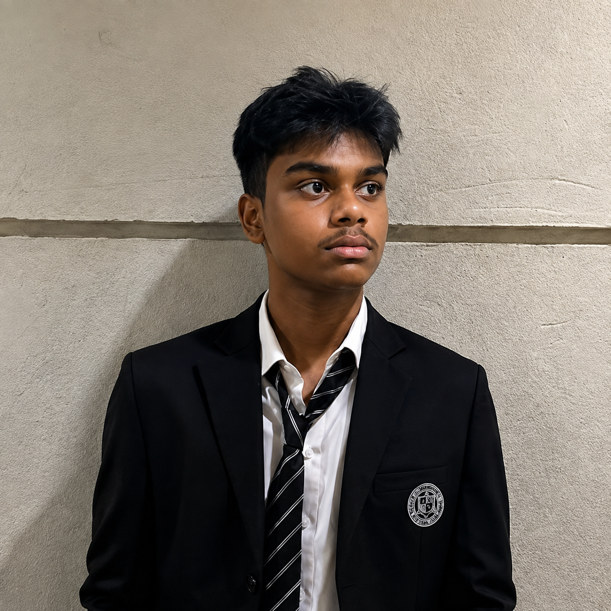

AI Engineer building with intelligence, automation, and code.
I build software using modern AI tools, automate the repetitive parts of development, and combine traditional engineering with AI-assisted workflows — so ideas move from concept to working product faster.

I treat AI as part of the toolchain — not the whole job.
I'm an AI Engineer who spends most of my time somewhere between writing code and directing it. My work sits at the intersection of software development and applied AI: building tools, automating the parts of development that don't need a human, and figuring out where large language models are actually useful inside a product instead of just impressive in a demo.
AI-assisted coding tools are part of my daily workflow — not as a shortcut around understanding the code, but as a way to move faster through what I already know and think more carefully about what I don't. That means using AI to scaffold new projects, debug tricky issues, refactor messy code, and test a few approaches before committing to one.
Underneath the AI layer, I still care about the fundamentals: sensible architecture, clean APIs, and code that reads well six months later. I'm especially drawn to automation — turning a five-step manual process into a single command, or a repetitive task into something that quietly runs itself.
Most of what I build starts small: a script, a prototype, an idea I want to test with an LLM. The ones that turn out to be genuinely useful are usually the ones worth finishing.
How I approach it
AI accelerates the parts of the process that don't need judgment.
Understanding the code still comes before shipping it.
Automation is a feature I design for, not an afterthought.
Small experiments are how real tools actually get built.
What I work with
The tools and technologies I reach for most, grouped by what they're actually for.
AI & LLM
Development
Automation
Tools & Tech
Where I can help
Five areas where AI, automation, and solid engineering tend to meet.
AI Engineering
Design and build practical AI-powered applications and intelligent workflows.
AI-Assisted Development
Use modern AI coding tools to accelerate development, debugging, refactoring, and experimentation.
Automation
Turn repetitive tasks and manual workflows into efficient automated systems.
Web Development
Build modern, responsive, high-quality websites and web applications.
AI Integration
Integrate AI and LLM capabilities into existing software and digital products.
AI as a development partner, not a replacement.
AI doesn't replace the engineering process for me — it sits inside it. I use it to explore ideas quickly, generate a first pass at a solution, catch mistakes earlier, and automate the repetitive parts of building software. The judgment, the architecture decisions, and the final quality check are still mine.
Idea
Spot a problem worth solving
AI Assistance
Explore approaches quickly
Development
Build it properly
Automation
Remove the repetitive steps
Testing
Check it actually works
Improvement
Refine based on results
Final Product
Ship something solid
This loop is rarely linear in practice — testing often sends me back to development, and improvement sometimes starts the whole cycle again. AI just makes each pass through it faster.
How I got here
The short version of the path so far.
Started exploring AI-assisted development
[Add a line about what sparked this and what you were building at the time.]
Began building automation tools
[Add a line about a specific automation project or workflow you built.]
Started building AI-integrated applications
[Add a line about an LLM-powered project and what it does.]
Continuing to build, ship, and learn
[Add what you're currently focused on.]